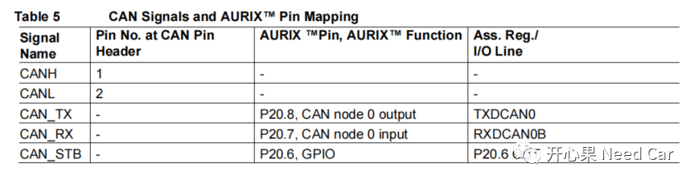
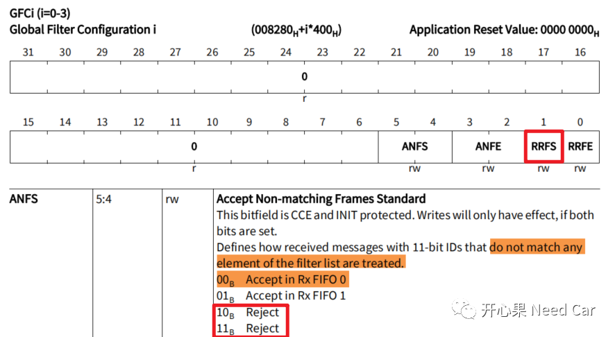
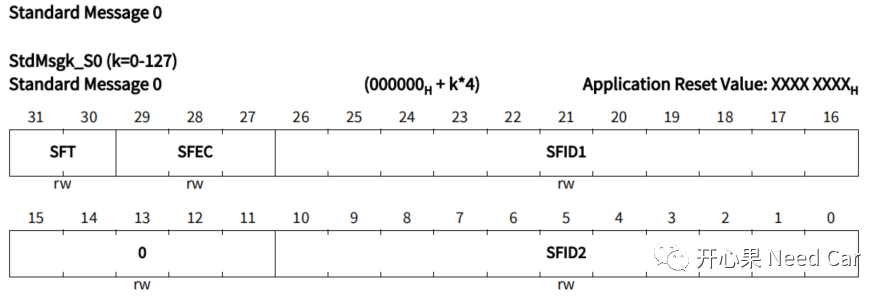
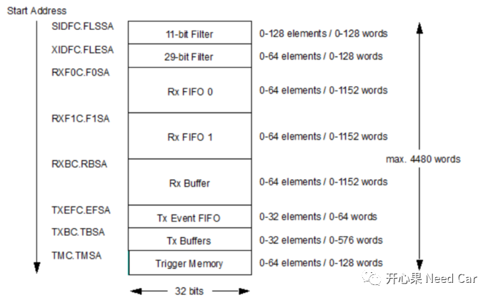
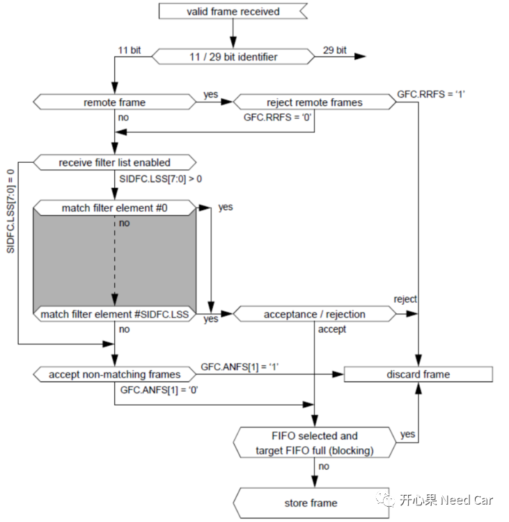
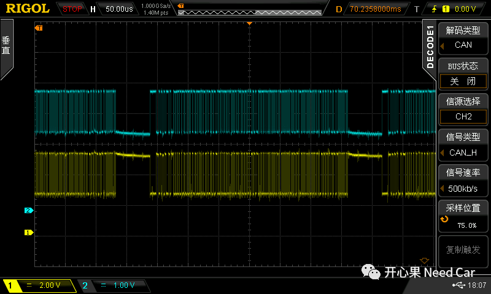
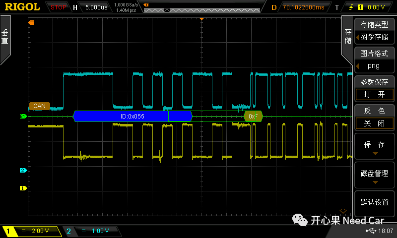
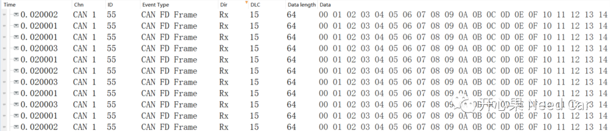
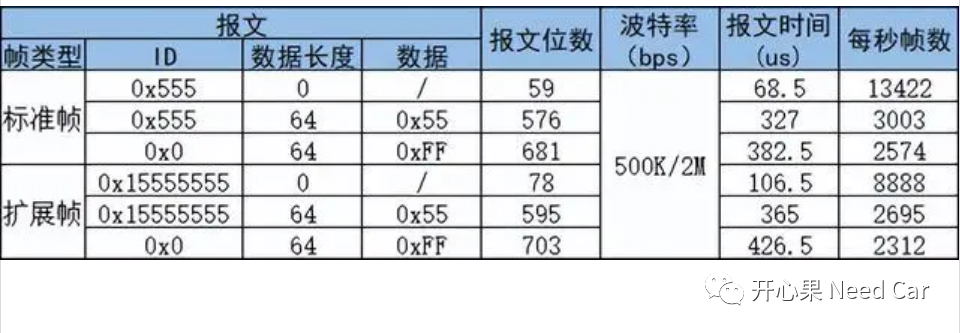

开心果 Need Car · 2023-07-08T09:30:00+08:00 · 微信原文
汽车嵌入式开发，很多时候，想学一些东西（eg：CANFD），但又不知道如何下手，这应该是大多数刚入行工程师的苦恼。目前项目上，CANFD的使用已经很普遍，而单纯阅读芯片手册，可能无法透彻的理解CANFD，如果想透彻的理解CANFD，结合目标板去实践是不二选择。
官网的MCMCAN_FD_1_KIT_TC375_LK工程用的回环模式，并不能真实发送/接收报文，本文基于官网工程做了二次开发，希望此Demo可以助力大家高效学习CANFD。
本文环境：TC375开发板+Tasking编译器。
1、TC375 CANFD实现注意事项

void GPIO_init(void){IfxPort_setPinMode(&MODULE_P20, 6, IfxPort_Mode_outputPushPullGeneral);IfxPort_setPinLow(&MODULE_P20, 6);}
（二）CAN_H、CAN_L Pin配置
代码实现如下：
IFX_CONST IfxCan_Can_Pins Can0PortInfo = {= &IfxCan_TXD00_P20_8_OUT,= IfxPort_OutputMode_pushPull,= &IfxCan_RXD00B_P20_7_IN,= IfxPort_InputMode_pullUp,= IfxPort_PadDriver_cmosAutomotiveSpeed1};
（三）波特率设置
配置代码如下：
.baudRate = {.baudrate = 500000,.samplePoint = 8000,.syncJumpWidth = 2000,.prescaler = 0,.timeSegment1 = 3,.timeSegment2 = 10},.fastBaudRate = {.baudrate = 2000000,.samplePoint = 8000,.syncJumpWidth = 2000,.prescaler = 1,.timeSegment1 = 3,.timeSegment2 = 10,.tranceiverDelayOffset = 0},
如上，设置Normal段速率为500Kbps，Data段速率为2000Kbps，采样点均设置80%。
（四）接收过滤配置
配置代码实现如下所示：
.filterConfig = {.messageIdLength = IfxCan_MessageIdLength_standard,.standardListSize = 0,.extendedListSize = 0,.rejectRemoteFramesWithStandardId = 0,.rejectRemoteFramesWithExtendedId = 0,.standardFilterForNonMatchingFrames = IfxCan_NonMatchingFrame_acceptToRxFifo0,.extendedFilterForNonMatchingFrames = IfxCan_NonMatchingFrame_acceptToRxFifo0},g_mcmcan.canFilter.number = 2;g_mcmcan.canFilter.elementConfiguration = IfxCan_FilterElementConfiguration_storeInRxFifo0;g_mcmcan.canFilter.type = IfxCan_FilterType_range;g_mcmcan.canFilter.id1 = 0x166;g_mcmcan.canFilter.id2 = 0x168;g_mcmcan.canFilter.rxBufferOffset = IfxCan_RxBufferId_0;
void IfxCan_Can_setStandardFilter(IfxCan_Can_Node *node, IfxCan_Filter *filter){/* enable configuration change CCCR.CCE = 1, CCCR.INIT = 1 */IfxCan_Node_enableConfigurationChange(node->node);Ifx_CAN_STDMSG *standardFilterElement = ((uint32*)(node->messageRAM.baseAddress + node->messageRAM.standardFilterListStartAddress));standardFilterElement->S0.B.SFID2 = filter->id2;/* First ID of standard ID filter element. */standardFilterElement->S0.B.SFID1 = filter->id1;/* 001B Store in Rx FIFO 0 if filter matches */standardFilterElement->S0.B.SFEC = 0x01;/* 00B Range filter from SF1ID to SF2ID (SF2ID ≥ SF1ID) */standardFilterElement->S0.B.SFT = 0x00;/* Defines how received messages with 11-bit IDs that do not match any* element of the filter list are treated. (0x03)11B Reject */node->node->GFC.B.ANFS = 0x03;/* disable configuration change CCCR.CCE = 0, CCCR.INIT = 0 */IfxCan_Node_disableConfigurationChange(node->node);}
CAN报文的接收过滤主要设置两部分：
1、Global Filter Configuration
主要配置GFC寄存器，本文对Standard帧进行过滤处理，如果与设置的接收范围不匹配，则Rejet，设置GFC寄存器的ANFS位域，如下所示：


注意：Standard Message 0并不是一个具体的寄存器，而是CAN模块专用的RAM区，由实现者根据需要配置所使用的SRAM大小和起始地址。
而CAN模块SRAM区的切割要按照手册要求划分，如下所示：


2、CANFD对应的CAN_H、CAN_L波形
在500Kbps/2000Kbps通信速率下，一帧64Byte数据长度的CANFD报文（CANID 0x55），数据内容0x55或者0xAA，大概需要320us,如下所示：


对应发送的报文如下所示，CAN ID = 0x55，可以对应如上的解析。

如下图，一帧报文传输用时是一个范围，统计如下所示：

3、工程源码
往期精彩回顾
基于Hightec+TC375TP的RT-Thread移植详解